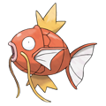

Top 7 Weakest Pokemon
| Rank |
Name |
Type |
Pokedex Entry |
National Pokedex Number |
Base Stat Total |
| #7 |
Feebas |
Water |
It is a shabby and ugly Pokemon. However, it is very hardy and can survive on little water. |
#349 |
200 |
| #6 |
Magikarp |
Water |
In the distant past, it was somewhat stronger than the horribly weak descendants that exist today. |
#129 |
200 |
| #5 |
Ralts |
Fairy |
If its horns capture the warm feelings of people or Pokemon, its body warms up slightly. |
#280 |
198 |
| #4 |
 Kricketot Kricketot |
Bug |
When its antennae hit each other, it sounds like the music of a xylophone. |
#401 |
194 |
| #3 |
Azurill |
Fairy |
Its tail is packed full of the nutrients it needs to grow. |
#298 |
190 |
| #2 |
Snom |
Bug |
It eats snow that piles up on the ground. The more snow it eats, the bigger and more impressive the spikes on its back grow. |
#872 |
185 |
| #1 |
 Sunkern Sunkern |
Grass |
It may plummet from the sky. If attacked by a Spearow, it will violently shake its leaves. |
#191 |
180 |